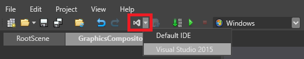
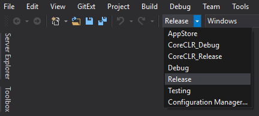
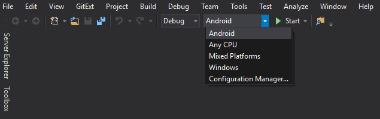

Distribute a game
When you're ready to publish your game, create a release build from Visual Studio, then distribute it.
1. Create a release build
If you've built your game in Release mode before, in your project folder (eg MyGame/Bin/MyPlatform/Release/), delete the Data folder. This folder might contain unnecessary files, such as old versions of assets, so it's simplest to build it again from scratch.
Open your project in Game Studio.
In the toolbar, click the drop-down menu and select Visual Studio.

Your project opens in Visual Studio.
In Visual Studio, from the Solution Configurations drop-down menu, select Release.

From the Solution platforms drop-down menu, select the platform you want to create a build for.

Note
You can only build for platforms you've added to your Stride project. For instructions about how to do this, see Add or remove a platform.
To build for Android or iOS, you need Xamarin, which is included with Visual Studio licenses. For instructions about how to install Xamarin with Visual Studio 2017, see this MSDN page.
Under Build, select Build solution.

Visual Studio creates a release build in your project bin folder (eg MyGame/Bin/MyPlatform/Release).
Tip
You might want to rename the Release folder to something more descriptive (such as the title of your game).
To build using terminal instead of Visual Studio
- You would need to install Visual Studio to get Developer Command Prompt for Visual Studio (Version)
- In Developer Command Prompt for Visual Studio
-
C:\User> msbuild PathToSln\NameOfProject.sln /p:Configuration=Release /p:OutputPath=YourPreferredPath
2. Delete unnecessary files
In the release folder in your project bin folder (eg MyGame/Bin/MyPlatform/Release), you can delete the following unnecessary files:
.pdbfiles (debug information).xmlfiles (API documentation)files that contain
vshostin their filenames (egMyGame5.vshost.exeandMyGame5.vshost.exe.manifest)folders other than the
x64,x86, ordatafoldersother unnecessary files, such as custom configuration files (ie files not created with Stride)
3. Distribute your game
After you create a release build, how you distribute it is up to you.
To run games made with Stride on Windows, users need:
.NET 8 SDK
DirectX11 (included with Windows 10 and later), OpenGL, or Vulkan
Visual C++ 2015 runtimes (x86 and/or x64, depending on what you set in your project properties in Visual Studio)